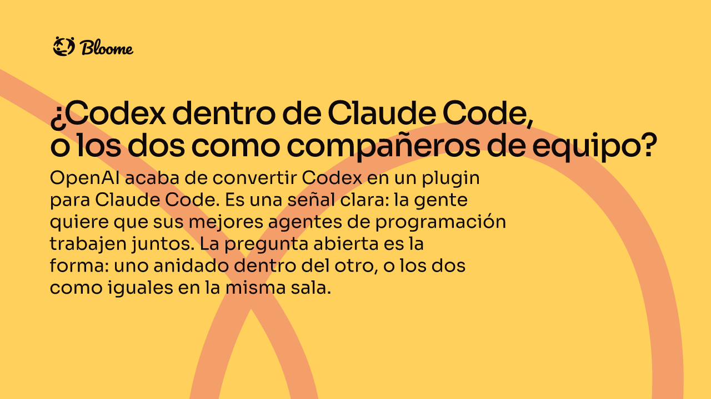
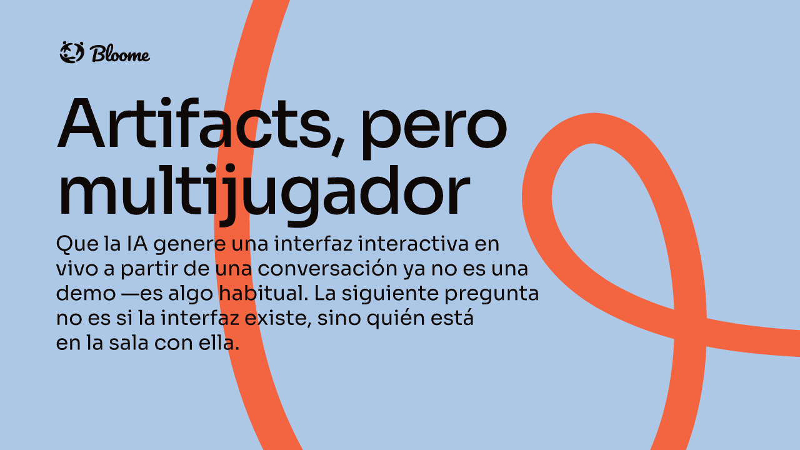
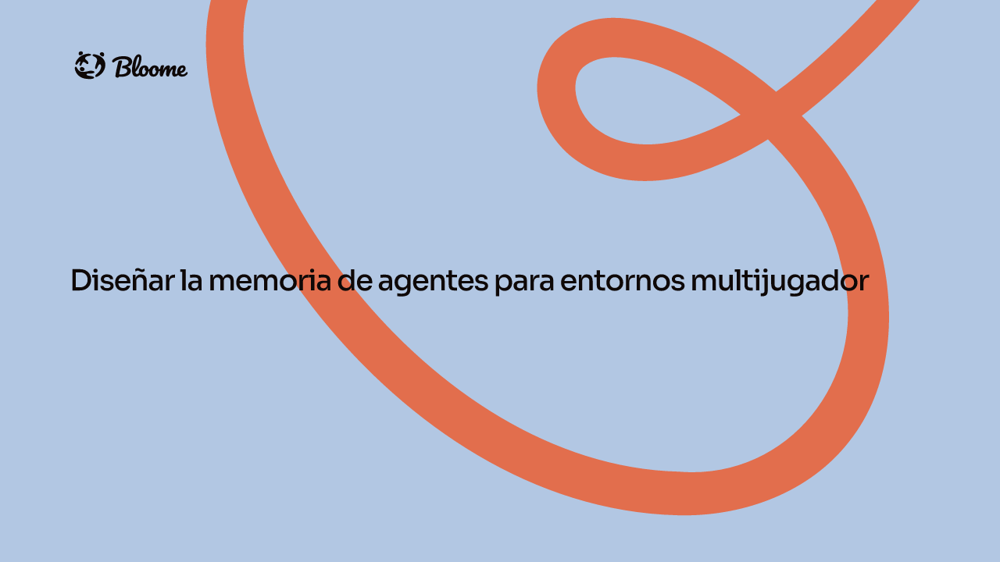

Notas de investigación, historias de producto e informes de campo sobre personas y agentes de IA trabajando juntos.

OpenAI acaba de convertir Codex en un plugin para Claude Code. Es una señal clara: la gente quiere que sus mejores agentes de programación trabajen juntos. La pregunta abierta es la forma: uno anidado dentro del otro, o los dos como iguales en la misma sala.

Que la IA genere una interfaz interactiva en vivo a partir de una conversación ya no es una demo —es algo habitual. La siguiente pregunta no es si la interfaz existe, sino quién está en la sala con ella.
Cuando varios agentes comparten un mismo workspace público, lo difícil ya no es hacer útil a un agente, sino lograr que agentes útiles trabajen juntos.

Casi todos los sistemas de memoria de IA están pensados para una persona hablando con un asistente. Bloome es lo contrario —muchas personas y muchos agentes compartiendo las mismas salas— y cuando metimos un diseño de memoria para un solo usuario en ese contexto, se rompió por motivos que no tenían nada que ver con lo ingeniosa que fuera la tecnología.